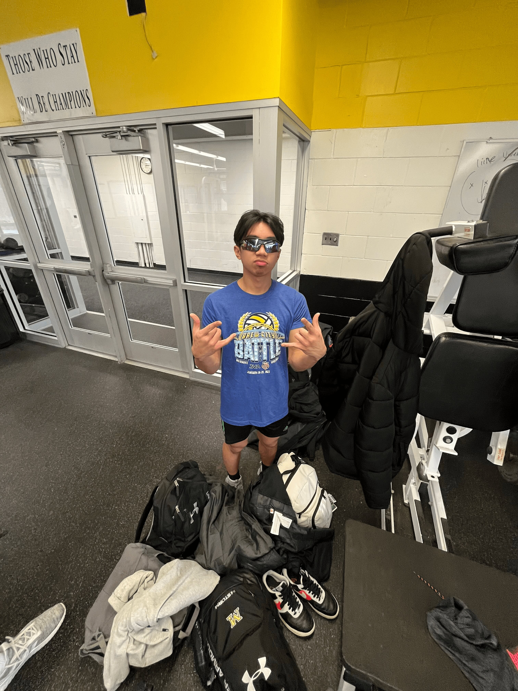

Hello World!
Information:
Name: Sebastian "Seb" Jaculbe
Lewis Email: sebastiandjaculbe@lewisu.edu
Discord Information: sebbae

Introduction
Hello, my name is Sebastian Jaculbe. I like to go by Seb. I'm from Monee, Illinois.
I went to Marian Catholic High School. I like basketball and volleyball.
My mom is a registered nurse and my dad is a mail carrier. My sister is two years younger
than me and she likes to play tennis.
What I Hope to Learn in this Course?
I hope to...
- learn how to program in different languages
- expand my knowledge in the field of Computer Science
- be prepared for the upcoming Computer Science courses
- improve my efficiency in programming
- improve my understanding in complex material
My Favorite Hobby/Activity
My favorite activity is playing volleyball.
Fun Fact
A fun fact about me is that I have been to Asia three times.
Greatest Innovations
Three of the greatest innovations are...
- the first programmable computer in 1941
Turning.com
- the first high-level programming language in 1954
Turning.com
- the first personal computer in 1950
Turning.com